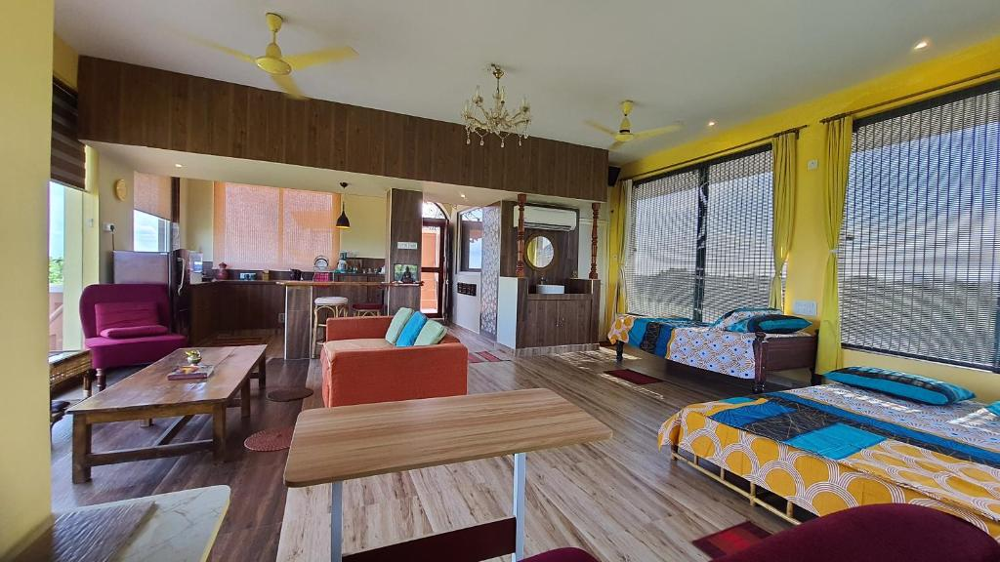

Tiruvannamalai -The Temple City
Shivalaya Arunachala Resort

Shivalaya Arunachala is a renowned hotel nestled in Tiruvannamalai, Tamil Nadu, offering a serene retreat for travelers.
Surrounded by the majestic Arunachala Hill, it provides a tranquil ambiance for guests seeking relaxation and rejuvenation.
The hotel's architecture reflects traditional South Indian charm, while its modern amenities ensure a comfortable stay.
Shivalaya Arunachala is known for its warm hospitality and personalized service, catering to the needs of both leisure and business travelers.
With its convenient location and peaceful atmosphere, it serves as an ideal base for exploring the spiritual and cultural treasures of Tiruvannamalai.